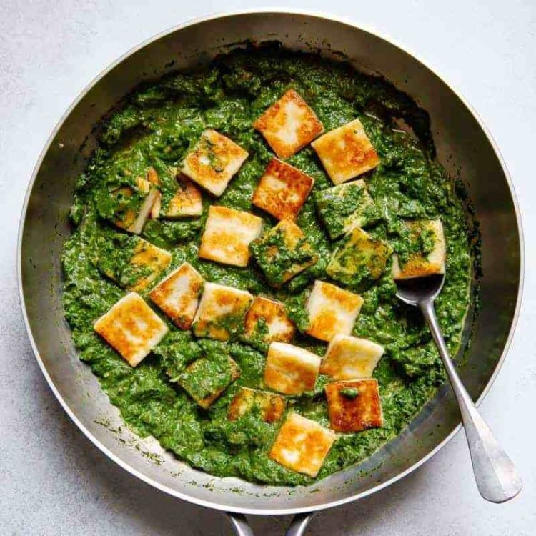

Palak Paneer

Description
Palak Paneer is a popular North Indian dish made with spinach (palak) and paneer (Indian cottage cheese). It is
a creamy and nutritious vegetarian dish that is often served with roti (Indian bread) or rice.
Ingredients
- 500 grams fresh spinach leaves
- 200 grams paneer, cubed
- 2 tablespoons ghee or vegetable oil
- 1 onion, finely chopped
- 2 tomatoes, pureed
- 1 tablespoon ginger-garlic paste
- 1 teaspoon cumin powder
- 1 teaspoon coriander powder
- 1/2 teaspoon turmeric powder
- 1/2 teaspoon red chili powder (adjust to taste)
- 1/4 cup heavy cream
- 1/2 teaspoon garam masala
- Salt to taste
Steps
- Prepare the spinach: Blanch spinach leaves, drain, and blend into a smooth puree
- Sauté onions and spices: Heat ghee or oil, sauté onions until golden brown, and add ginger-garlic paste. Then,
add tomato puree and cook until the oil separates
- Add spices and spinach: Add cumin powder, coriander powder, turmeric powder, red chili powder, and salt. Mix
well, and then add the spinach puree. Cook for 5 minutes
- Fry and add paneer: Lightly fry paneer cubes until golden brown in a separate pan. Drain and add them to the
spinach mixture
- Add cream and garam masala: Pour in heavy cream and sprinkle garam masala. Simmer for 2-3 minutes
- Adjust seasoning and serve: Taste and adjust seasoning if needed. Remove from heat and serve hot with roti,
naan, or rice